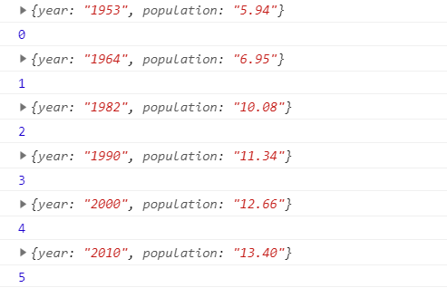
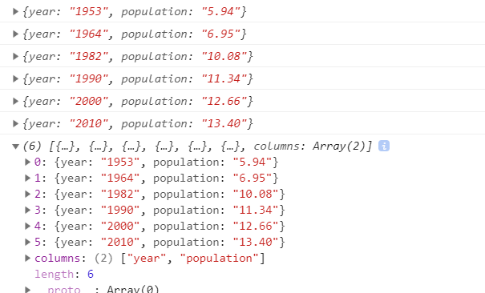
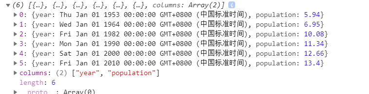

我的csv文件：
year,population
1953,5.94
1964,6.95
1982,10.08
1990,11.34
2000,12.66
2010,13.40使用d3.csv()输出：
d3.csv("Data/data.csv",function (error,data) {
if(error){
console.log(error)
}
console.log(data);
return data;
})
可以看到并不是csv数组。
解决方法1：
查看官方API文档（https://github.com/d3/d3-fetch/blob/master/README.md#dsv）：
修改代码如下：
d3.csv("Data/data.csv",function (csvdata) {
console.log(csvdata);
return csvdata;
}).then(function (data) {
console.log(data)
})输出：

解决方法2：
使用d3.dsv(),代码并格式化数据如下：
d3.dsv(",", "Data/data.csv", function(d) {
return {
year: new Date(+d.year, 0, 1), // convert "Year" column to Date
population: +d.population // convert "population" column to number
};
}).then(function(data) {
console.log(data);
});输出：

推荐阅读：